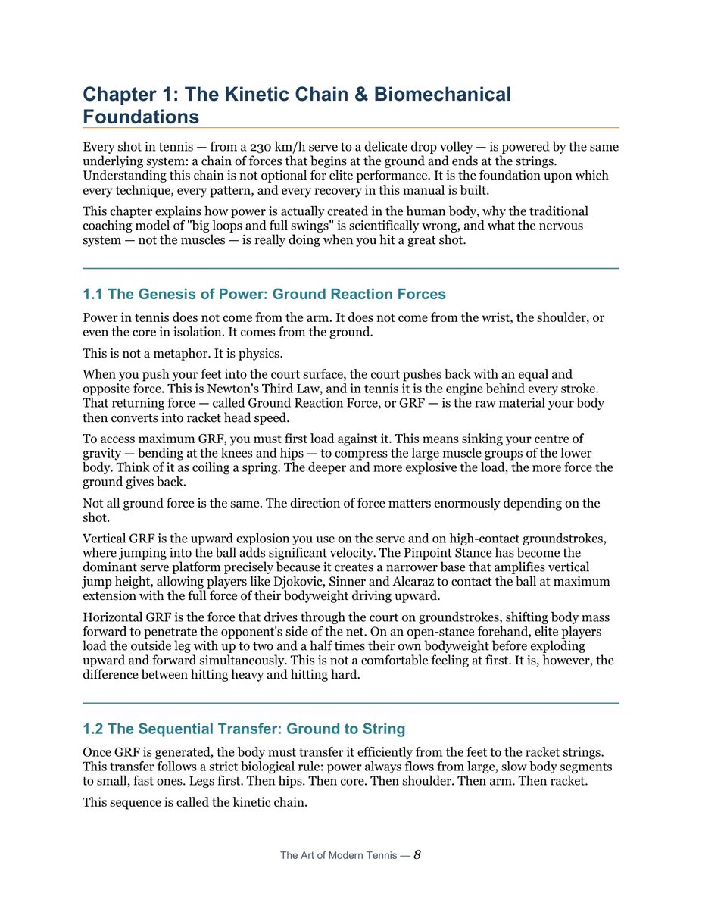
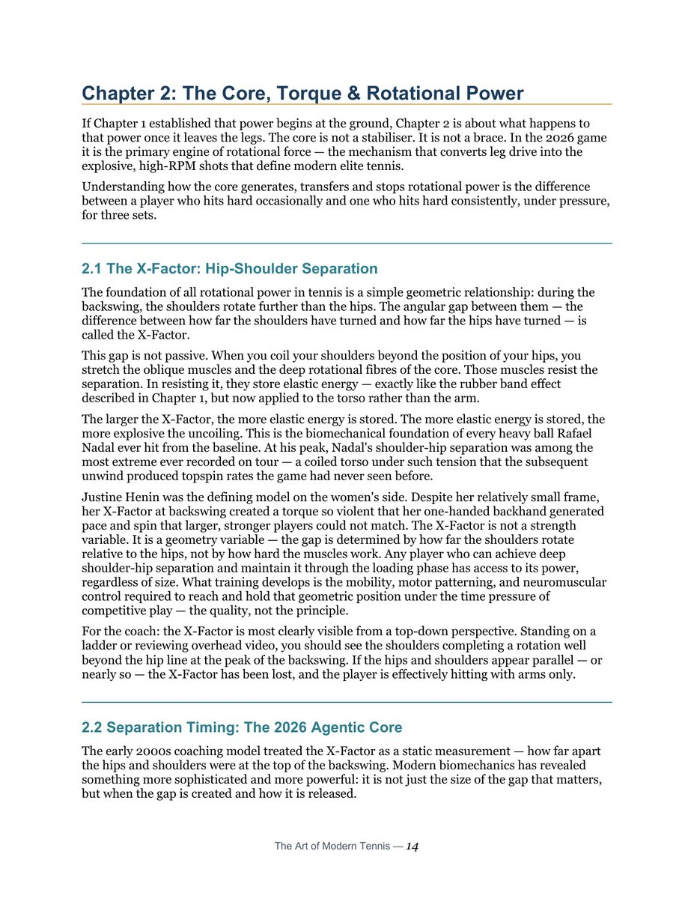

1. Nghệ Thuật Quần Vợt Hiện Đại: Sự Hợp Nhất Thân Thể & Tâm Trí
Quần vợt hiện đại của thập niên 2020 không còn là cuộc đối đầu đơn thuần giữa các kỹ thuật đơn lẻ. Một nhà vô địch tương lai được định nghĩa bởi sự tích hợp liền mạch giữa một thể xác võ thuật (the martial body) và một tâm trí tự chủ có khả năng phản ứng tốc độ cao (the agentic mind).
Để đạt đến trình độ đỉnh cao, mọi cú đánh đều phải bắt nguồn từ các định luật vật lý cơ bản: định luật bảo toàn động lượng, truyền dẫn lực qua chuỗi động học và tối ưu hóa thời gian phát lực.

Hình 1 (Chapter 1): Nền tảng chuỗi động học (The Kinetic Chain). Sức mạnh không bao giờ được tạo ra từ cánh tay đơn độc; nó bắt đầu từ lực nén chân xuống mặt đất, truyền qua khớp gối, xoay khung chậu, vặn xoắn thân trên và bùng nổ qua đầu vợt tại thời Điểm tiếp xúc bóng.2. Bản Chất Của Chuỗi Động Học: Hiện Tượng Trễ Nhịp Có Chủ Đích (Deliberate Time-Lag)
Hiểu biết mang tính cách mạng nhất trong sinh cơ học thể thao hiện đại mà các phương pháp huấn luyện truyền thống thường bỏ sót chính là: Chuỗi động học không vận hành bằng cách xoay đồng thời mọi bộ phận, mà bằng sự trễ nhịp có tính toán (deliberate time-lag).
Mỗi mắt xích trong chuỗi cơ thể (bàn chân → cẳng chân → đùi → khung chậu → thân trên → vai → cánh tay → cẳng tay → cổ tay) sẽ lần lượt tăng tốc đến vận tốc tối đa, sau đó phanh lại (deceleration) đột ngột để truyền toàn bộ động lượng sang mắt xích tiếp theo. Hiện tượng này tương tự như chuyển động của một chiếc roi da hoặc chiếc roi quất — năng lượng được dồn nén và gia tốc lũy tiến qua từng phân đoạn hẹp dần cho đến khi giải phóng vận tốc âm thanh ở đầu mút.
Khái Niệm Khớp 9 Bậc Tự Do (9 Degrees of Freedom)
Cánh tay con người có đến 9 bậc tự do chỉ tính riêng ở khớp vai, khuỷu tay và cổ tay (chưa kể các khớp ngón tay). Điều này tạo ra vô số khả năng chuyển động nhưng cũng là nguồn gốc của sự thiếu ổn định. Một tay vợt đẳng cấp thế giới thành công trong việc "khóa cứng" các bậc tự do không cần thiết, biến cánh tay thành một đòn bẩy truyền lực đàn hồi tự động thay vì dùng cơ bắp cánh tay để gồng cứng đánh bóng.

Hình 2 (Chapter 2): Vùng lõi cơ thể, momen xoắn và sức mạnh xoay trục (Core, Torque & Rotational Power). Phân tích chu kỳ kéo dãn - co ngắn (stretch-shortening cycle) của nhóm cơ chéo bụng và cơ lưng, tạo ra nguồn năng lượng bùng nổ cho các cú đánh hiện đại.3. Vùng Lõi Cơ Thể & Sự Phân Tách Hông - Vai (Hip-Shoulder Separation)
Các tay vợt ưu tú của kỷ nguyên mới như Jannik Sinner và Carlos Alcaraz không đơn thuần chỉ xoay vai ra sau hông trong giai đoạn mở vợt (unit turn). Đỉnh cao sinh cơ học của họ nằm ở giai đoạn khởi đầu chuyển động tiến về phía trước (forward swing):
- Khung chậu xoay trước (Hips Initiate First): Khung chậu bắt đầu xoay về phía lưới khi vai vẫn còn đang ở vị trí xoắn cực đại ra sau. Sự chênh lệch góc giữa đường nối hai gai chậu và đường nối hai mỏm cùng vai được gọi là góc phân tách hông - vai (hip-shoulder separation angle).
- Tích trữ năng lượng đàn hồi (Elastic Storage): Sự phân tách này kéo căng toàn bộ hệ cơ chéo bụng (anterior/posterior oblique slings) và màng cân cơ lưng ngực như một dây cao su kéo căng hết cỡ.
- Bùng nổ thụ động (Passive Whip): Khi thân trên được giải phóng, vai và cánh tay giật mạnh về phía trước với vận tốc góc cực cao mà không cần tiêu tốn năng lượng co cơ chủ động từ bắp tay.
4. Bộ Chân Hiện Đại: Khai Thác Lực Phản Hồi Mặt Đất (Ground Reaction Force)
Sức mạnh bắt đầu từ mặt đất. Nếu không có lực phản hồi mặt đất (GRF), cơ thể không thể tạo ra momen xoay. Bộ chân hiện đại không chỉ là việc chạy nhanh đến bóng, mà là kỹ thuật "cắm neo" (planting) và bật nhả (uncoiling):
- Tư thế đứng mở (Open Stance) & Bán mở (Semi-Open Stance): Cho phép tích nạp tải trọng tối đa lên chân sau (loading on outside leg), chuyển đổi 100% lực đẩy thẳng đứng thành momen quay của khung chậu.
- Nhảy thăng bằng (Split-Step Timing): Tiếp đất bằng nửa trước bàn chân đúng vào thời điểm đối thủ vừa chạm bóng 0.15 giây, kích hoạt phản xạ co cơ đàn hồi (stretch reflex) của gân gót Achilles giúp tay vợt lao đi theo mọi hướng với độ trễ phản xạ bằng không.